Focused ultrasound • Imaging • Neuromodulation
Laboratory for Acoustic Therapy and Imaging
Developing focused ultrasound technologies for precise, noninvasive interaction with biological systems.
Latest
News
New FUS Forward with Zhihai Qiu
Charles and Keith sat down with Zhihai Qiu of Guadont Institute of Science and Technology, whose group pioneered genetically sensitizing neurons to ultrasound. We talk sonogenetics, his journey through physics and neuroscience, the importance of collaboration, and why he sees a bright future for the field.
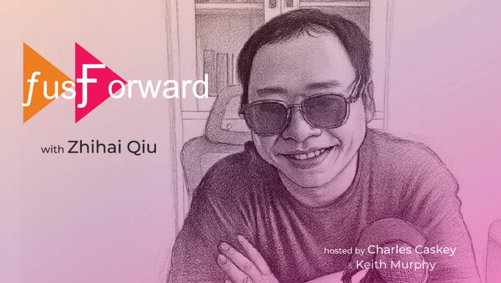
Lab attends FUN26
The lab attended the FUN26 conference and presented abstracts on array construction, thalamocortical modulation, and methods to localize transducers during MR-guided focused ultrasound. This conference always has a ton of great science, and this year was no exception. It was, however, possibly eclipsed by the baguettes.
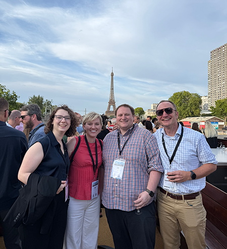
New study links focused ultrasound to neural and fMRI responses in the primate brain
focused ultrasound targeting the thalamus produced localized changes in neuronal activity and fMRI signals. The findings help clarify how ultrasound modulates deep brain circuits and support its potential for precise, non-invasive neuromodulation.
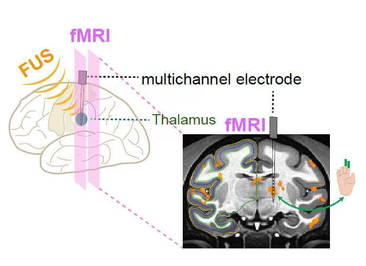
Research
Our research is organized around a central idea: ultrasound can become a controllable therapeutic and neuroscience platform only when targeting, safety, imaging, and biological response are treated as one integrated measurement problem.
Targeting, safety, and translational systems
Developing imaging, simulation, tracking, and validation workflows that make ultrasound therapies precise, reproducible, and clinically credible.
Ultrasound imaging and therapy monitoring
Using Doppler imaging, passive acoustic mapping, and physiologic ultrasound biomarkers to guide interventions and monitor tissue response.
Neuromodulation and mechanistic studies
Applying focused ultrasound to modulate brain circuits and studying how acoustic energy can be used to interact with and modulate cells, networks, and behavior.
Program areas
1. Targeting, safety, and translational systems
Reliable therapy and rigorous neuroscience both depend on knowing where the acoustic field goes and what it does. We develop quantitative methods to localize, simulate, validate, and monitor ultrasound exposure.
- Optical tracking, stereotactic frames, patient-specific simulations, synthetic CT, and aberration correction workflows.
- MR Acoustic Radiation Force Imaging and MR thermometry for focus localization and exposure assessment.
- Safety, cavitation monitoring, and consensus frameworks for transcranial ultrasound stimulation and blood–brain barrier opening.
2 . Causal neuromodulation of brain circuits
Focused ultrasound can modulate neural activity without implants or incisions. We use this capability to probe causal relationships in sensory, pain, cognitive, and affective networks.
- MR-guided focused ultrasound with fMRI readouts to study circuit-level responses in preclinical models.
- Network-level studies of somatosensory, thalamocortical, nociceptive, and frontal systems.
- Collaborative experiments linking precise perturbation to behavior, learning, motivation, and brain-state-dependent responses.
3. Mechanisms of ultrasound–biological interaction
To make ultrasound therapies controllable, we study how acoustic parameters produce biological responses. This includes cellular, pharmacological, and imaging-based experiments that connect pulse design to mechanism.
- Pulse repetition frequency and temporal structure as determinants of neuronal calcium responses.
- Ion-channel and mechanosensitive pathways contributing to ultrasound-evoked activity.
- Responses across neurons, glia, endothelial cells, pericytes, and tumor cells to understand ultrasound as a multicellular mechanical stimulus.
4. Ultrasound imaging and therapy monitoring
Beyond delivering acoustic energy, ultrasound can provide real-time information about vascular physiology, microbubble activity, and treatment response. We develop and apply ultrasound imaging approaches that help guide therapy and quantify biological change in the brain and cancer.
- Power Doppler imaging and passive acoustic mapping to guide focused ultrasound-mediated blood–brain barrier opening.
- Ultrafast power Doppler ultrasound to monitor vascular changes associated with radiation response and immune activity in tumors.
- Quantitative ultrasound workflows that connect imaging biomarkers to physiology, targeting, and therapeutic response.
Lab philosophy
We build tools, but not for their own sake. Our goal is to make ultrasound a quantitative intervention and measurement platform: a way to target tissue, image response, test causal hypotheses, and translate those insights into safe, controllable therapies.
Current work is supported by the National Institutes of Health and collaborative foundation-supported projects in focused ultrasound and neurotechnology.
Selected Publications by Area
Our publications span targeting and safety systems, ultrasound imaging and therapy monitoring, causal brain circuit modulation, and mechanisms of ultrasound bioeffects. A complete and current publication list is available through Google Scholar.
Targeting, safety, and translational systems
- MR-ARFI methods for transcranial focus localization and safe exposure selection.
1. Phipps, M. A., Jonathan, S. V., Yang, P. F., Chaplin, V., Chen, L. M., Grissom, W. A., & Caskey, C. F. (2019). Considerations for ultrasound exposure during transcranial MR acoustic radiation force imaging. Scientific reports, 9(1), 16235.
2. Phipps, M. A., Manuel, T. J., Sigona, M. K., Luo, H., Yang, P. F., Newton, A., ... & Caskey, C. F. (2024). Practical targeting errors during optically tracked transcranial focused ultrasound using MR-ARFI and array-based steering. IEEE Transactions on Biomedical Engineering, 71(9), 2740-2748. [PMC]
3. Sengupta, S., Phipps, M. A., Chen, L. M., Caskey, C. F., & Grissom, W. A. (2026). Alternating‐contrast single‐shot spiral MR‐ARFI with model‐based displacement map reconstruction. Magnetic Resonance in Medicine, 95(1), 457-464.
- Patient-specific simulation, synthetic CT, optical tracking, and through-transmit aberration correction workflows.
1. Liu, H., Sigona, M. K., Manuel, T. J., Chen, L. M., Dawant, B. M., & Caskey, C. F. (2023). Evaluation of synthetically generated computed tomography for use in transcranial focused ultrasound procedures. Journal of Medical Imaging, 10(5), 055001-055001.
2. Donovan, C. L., & Caskey, C. F. (2026). Performance of a through-transmit aberration correction method for transcranial focused ultrasound: Simulation and experimental evaluation. The Journal of the Acoustical Society of America, 159(3), 2694-2705. - Small-volume blood–brain barrier opening, cavitation monitoring, and therapeutic ultrasound array development.
1. Manuel, T. J., Sigona, M. K., Phipps, M. A., Kusunose, J., Luo, H., Yang, P. F., ... & Caskey, C. F. (2023). Small volume blood-brain barrier opening in macaques with a 1 MHz ultrasound phased array. Journal of Controlled Release, 363, 707-720.
2. Singh, A., Kusunose, J., Phipps, M. A., Wang, F., Chen, L. M., & Caskey, C. F. (2022). Guiding and monitoring focused ultrasound mediated blood–brain barrier opening in rats using power Doppler imaging and passive acoustic mapping. Scientific Reports, 12(1), 14758. - International consensus work on biophysical safety for transcranial ultrasound stimulation.
1. Aubry, J. F., Attali, D., Schafer, M. E., Fouragnan, E., Caskey, C. F., Chen, R., ... & Pauly, K. B. (2025). ITRUSST consensus on biophysical safety for transcranial ultrasound stimulation. Brain stimulation.
Mechanisms of neuromodulation
-
Calcium imaging studies of ultrasound responses in neurons, glia, endothelial cells, and pericytes.
1. Newman, M., Rasiah, P. K., Kusunose, J., Rex, T. S., Mahadevan-Jansen, A., Hardenburger, J., ... & Caskey, C. F. (2024). Ultrasound modulates calcium activity in cultured neurons, glial cells, endothelial cells and pericytes. Ultrasound in Medicine & Biology, 50(3), 341-351.
2. Manuel, T. J., Kusunose, J., Zhan, X., Lv, X., Kang, E., Yang, A., ... & Caskey, C. F. (2020). Ultrasound neuromodulation depends on pulse repetition frequency and can modulate inhibitory effects of TTX. Scientific Reports, 10(1), 15347.
-
Mechanistic studies connecting acoustic parameters, mechanosensitive pathways, and cellular responses.
1. Fabiano, A. R., Newman, M. W., Dombroski, J. A., Rowland, S. J., Knoblauch, S. V., Kusunose, J., ... Caskey, C.F. & King, M. R. (2025). Applying Ultrasound to Mechanically and Noninvasively Sensitize Prostate Tumors to TRAIL‐Mediated Apoptosis. Advanced Science, 12(15), 2412995.
Causal brain circuit modulation
-
fMRI-based mapping of ultrasound neuromodulation
1. Yang, P. F., Phipps, M. A., Jonathan, S., Newton, A. T., Byun, N., Gore, J. C., ..., Caskey, C.F., Chen, L. M. (2021). Bidirectional and state-dependent modulation of brain activity by transcranial focused ultrasound in non-human primates. Brain Stimulation, 14(2), 261-272.
2. Yang, P. F., Phipps, M. A., Newton, A. T., Chaplin, V., Gore, J. C., Caskey, C. F., & Chen, L. M. (2018). Neuromodulation of sensory networks in monkey brain by focused ultrasound with MRI guidance and detection. Scientific reports, 8(1), 7993.
3. Mishra, A., Yang, P. F., Manuel, T. J., Newton, A. T., Phipps, M. A., Luo, H., ..., Caskey, C.F., Chen, L. M. (2025). Modulating nociception networks: the impact of low-intensity focused ultrasound on thalamocortical connectivity. Brain Communications, 7(1), fcaf062. -
Collaborative work using ultrasound stimulation to test frontal circuit contributions to flexible learning and motivation.
1. Banaie Boroujeni, K., Sigona, M. K., Treuting, R. L., Manuel, T. J., Caskey, C. F., & Womelsdorf, T. (2022). Anterior cingulate cortex causally supports flexible learning under motivationally challenging and cognitively demanding conditions. PLoS biology, 20(9), e3001785.
Ultrasound imaging and monitoring of therapeutic response
-
Using Doppler imaging, passive acoustic mapping, and physiologic ultrasound biomarkers to guide interventions and monitor tissue response in neuromodulation and cancer therapy applications.
1. Singh, A., Kusunose, J., Phipps, M. A., Wang, F., Chen, L. M., & Caskey, C. F. (2022). Guiding and monitoring focused ultrasound mediated blood–brain barrier opening in rats using power Doppler imaging and passive acoustic mapping. Scientific Reports, 12(1), 14758.
2. Martello, S.E., Xia, J., Kusunose, J., Hacker, B.C., Mayeaux, M.A., Lin, E.J., Hawkes, A., Singh, A., Caskey, C.F. and Rafat, M., 2024. Ultrafast power doppler ultrasound enables longitudinal tracking of vascular changes that correlate with immune response after radiotherapy. Theranostics, 14(18), p.6883. - Open-source contributions to disseminate methods for ultrasound therapy and imaging
1. Coolbaugh, C. L., Bush, E. C., Caskey, C. F., Damon, B. M., & Towse, T. F. (2016). FloWave. US: validated, open-source, and flexible software for ultrasound blood flow analysis. Journal of Applied Physiology, 121(4), 849-857.
2. Poorman, M. E., Chaplin, V. L., Wilkens, K., Dockery, M. D., Giorgio, T. D., Grissom, W. A., & Caskey, C. F. (2016). Open-source, small-animal magnetic resonance-guided focused ultrasound system. Journal of therapeutic ultrasound, 4(1), 22.
Perspectives & Outreach
In addition to experimental research, the lab engages with the broader focused ultrasound and neurotechnology community through discussions, collaborations, and public-facing work.
FUS Forward
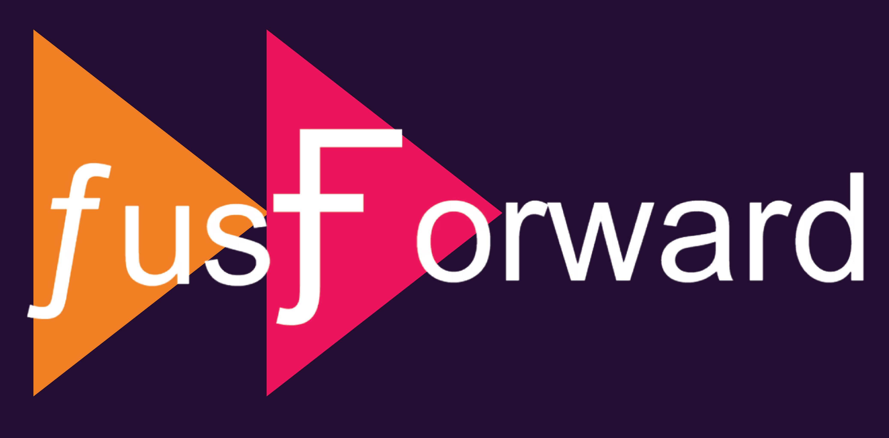
FUS Forward is a podcast on focused ultrasound neuromodulation exploring current challenges, emerging ideas, and perspectives from across academia and industry. The podcast is co-hosted by Charles Caskey and Keith Murphy (Attune Neurosciences)
Field engagement and standards
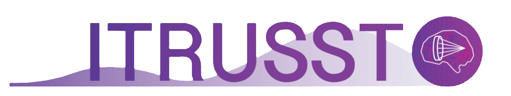
The lab contributes to broader efforts to define safe and reproducible ultrasound practices. This includes participation in international consensus initiatives on the biophysical safety of transcranial ultrasound stimulation (ITRUSST).
People
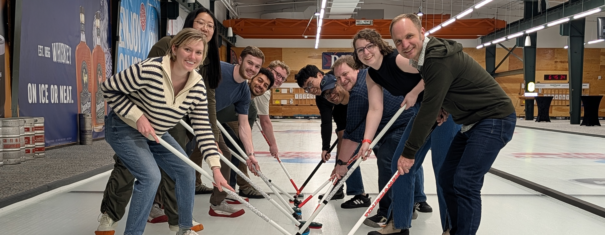
The lab works at the intersection of acoustics, ultrasound imaging, MRI, neuroscience, and translational neurotechnology. We collaborate closely with engineers, neuroscientists, clinicians, imaging scientists, and domain experts in preclinical and human studies.
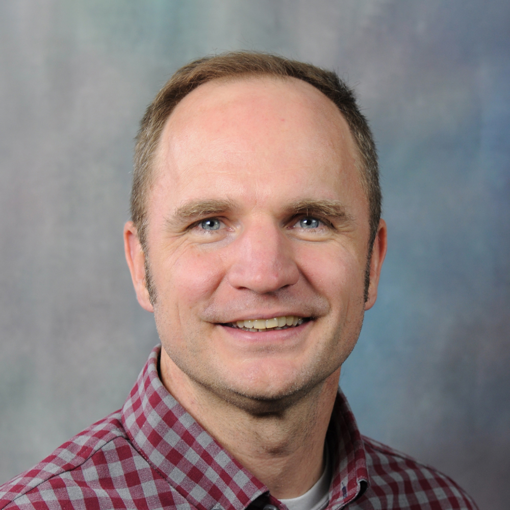
Charles Caskey, PhD
Principal Investigator
Focused ultrasound, ultrasound imaging, image-guided therapy, neuromodulation, quantitative validation, and translational neurotechnology.
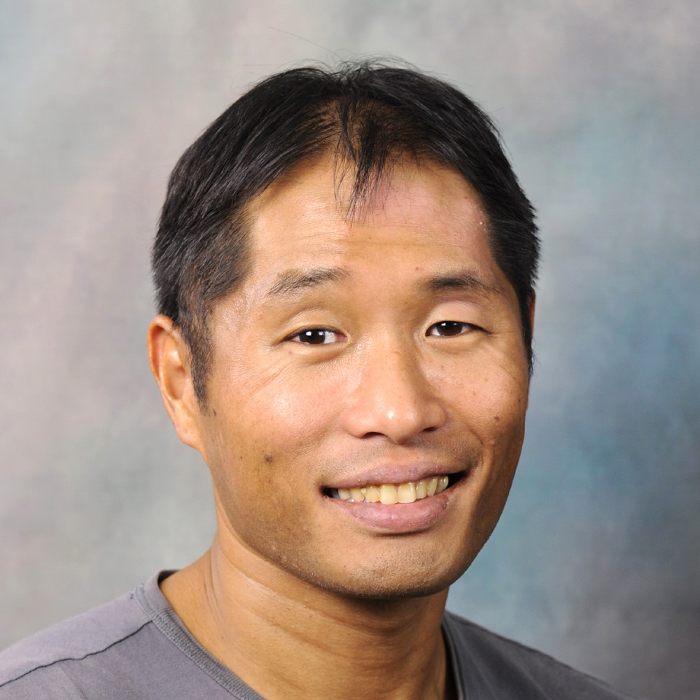
Jiro Kusunose, PhD
Imaging Research Specialist
Research focuses on diagnostic and therapeutic ultrasound, contrast agents, and image-guided cancer therapy and neuromodulation. Current projects investigate ultrasound-enhanced particle delivery to breast tumors and focused ultrasound approaches for neuronal activation in the brain.
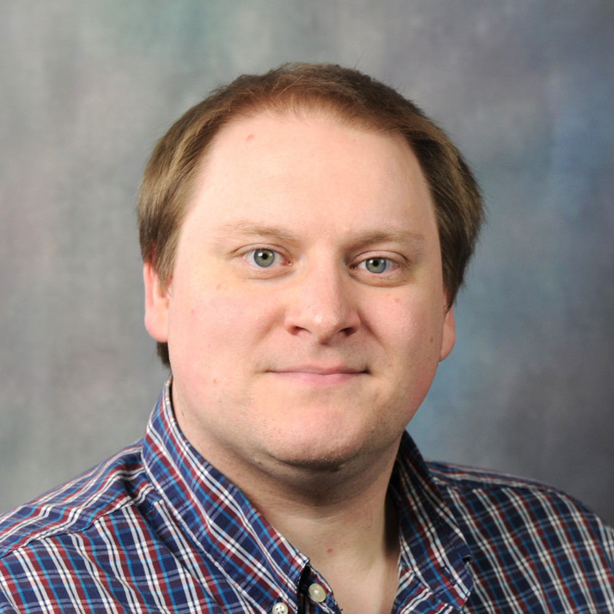
Tony Phipps, PhD
Imaging Research Specialist
Interested in image-guided focused ultrasound for neuromodulation, with a focus on the safety, targeting, and validation of transcranial ultrasound stimulation experiments.
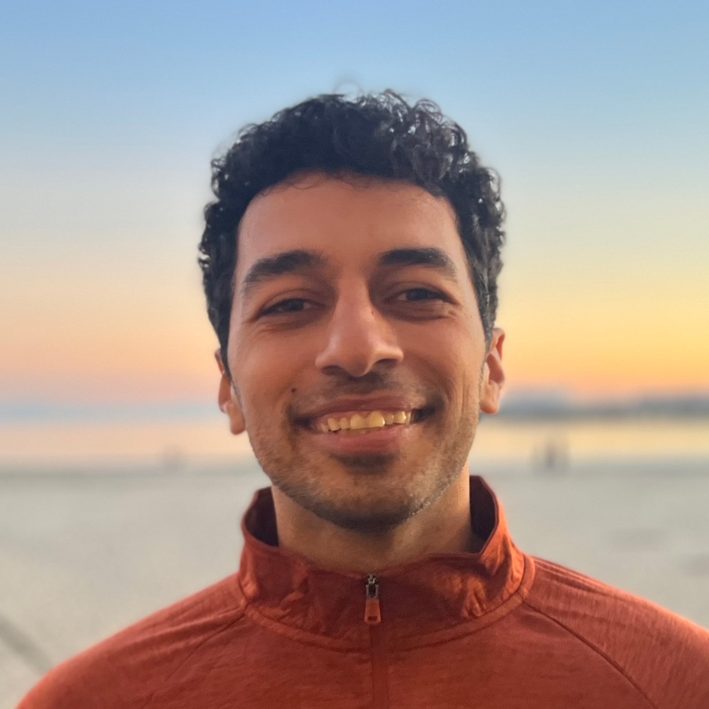
Jad El Harake, PhD
Postdoctoral Scholar
Researches clinical applications of transcranial focused ultrasound neuromodulation, and has a background in cardiovascular ultrasound imaging, acoustic simulations, and signal processing.
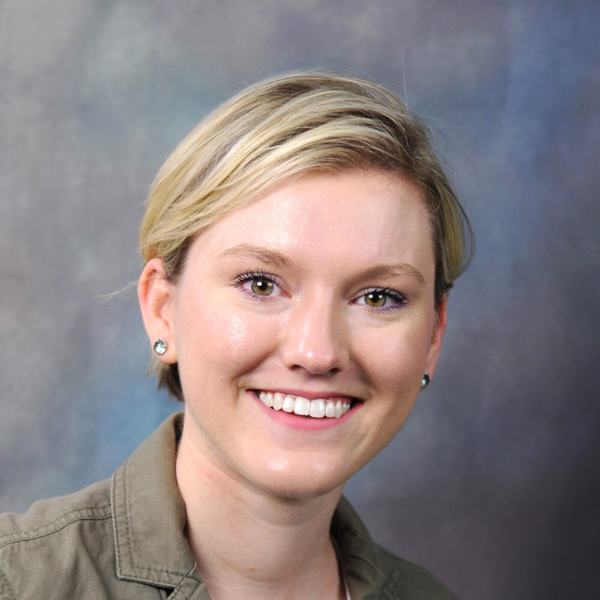
Allie Dockum
Graduate Student
Interested in transcranial focused ultrasound for studying complex cognition. Develops neuromodulation treatment pipelines using simulation and optical tracking, with a focus on thalamic ultrasound interactions.
Jixin "Andy" Xia
Graduate Student
PhD candidate in Biomedical Engineering focused on the design and application of focused ultrasound neuromodulation systems. Develops ultrasound-guided neuromodulation platforms, low-cost transcranial FUS arrays, and novel targeting methods, with collaborative work spanning functional ultrasound imaging, immunomodulation, and preclinical neuroscience.
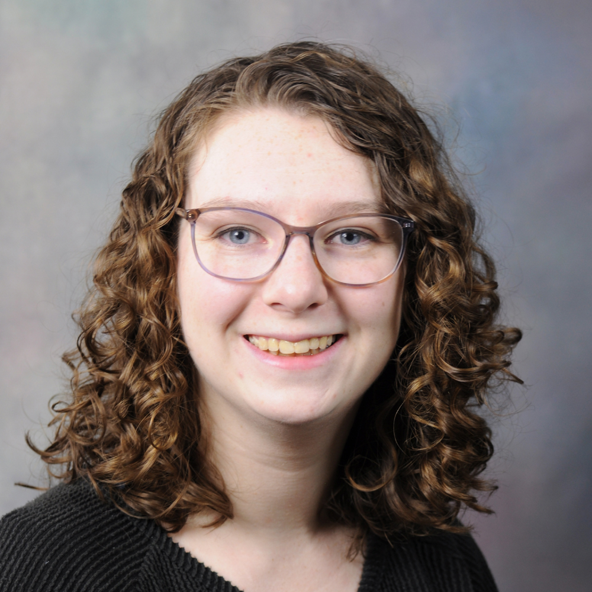
Ainsley McDonald-Boyer
Graduate Student
Brief research description.
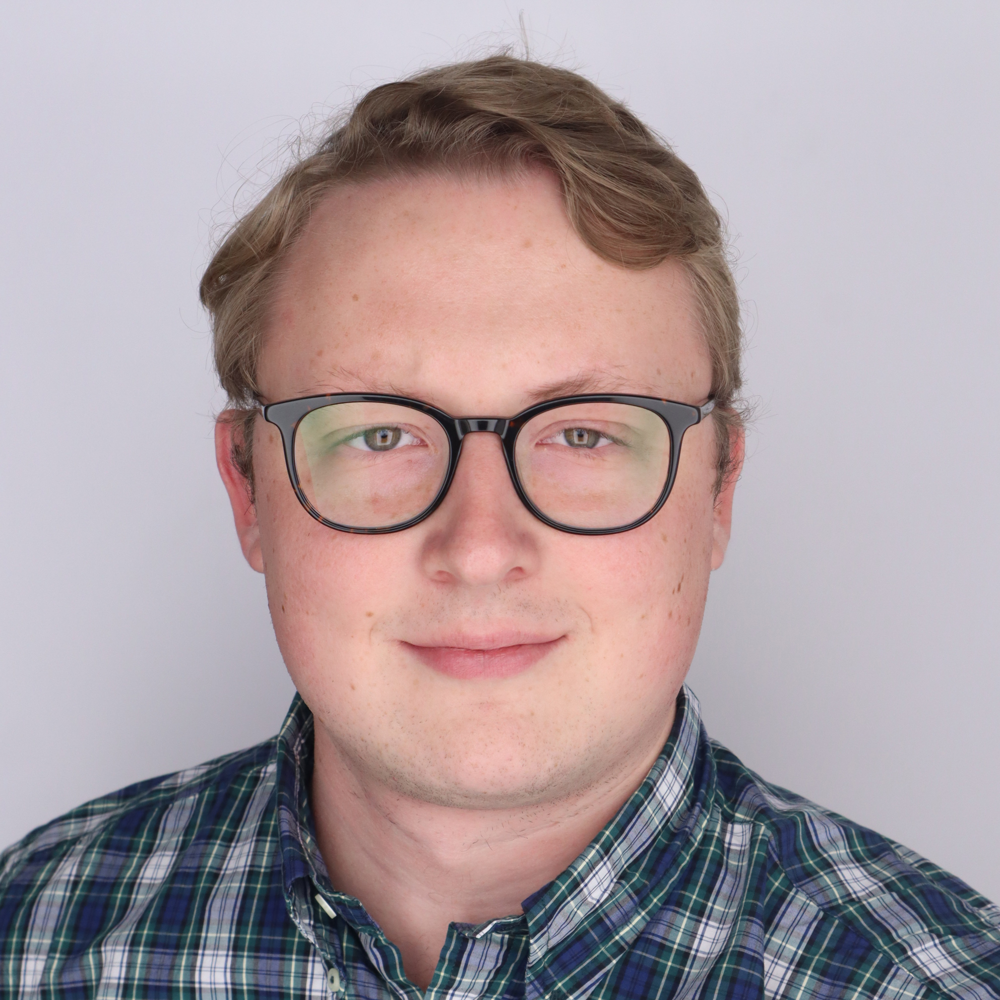
Malachy Newman
Graduate Student
Researches therapeutic ultrasound-mediated drug delivery with a focus on transcranial blood–brain barrier opening. Current projects investigate ultrasound-enabled neuromodulation with neuroactive agents monitored by fMRI, as well as novel contrast agents to improve blood–brain barrier opening.
Boqun Yang
Master of Imaging Science Student
Skull attenuation during transcranial ultrasound.
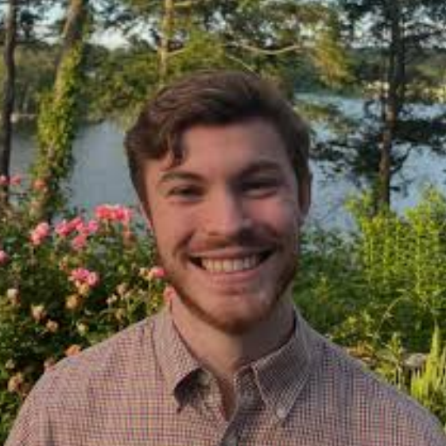
Cooper Donovan
Undergraduate Researcher
Undergraduate researcher focused on transcranial focused ultrasound simulation and aberration correction. Contributed to studies of through-transmit skull compensation methods in preclinical models and developed GPU-accelerated acoustic simulation and signal processing workflows.
Alumni
Past lab members and trainees
- Christopher Jarrett — Graduate student
- Eddie Hyatt — Radiology resident
- Audris Pinkerton — Medical student
- Michael Kremer — Undergraduate student
- Vandiver Chaplin — Graduate student
- Megan Poorman — Co-mentored graduate student
- Michael Hogan — Radiology resident
- Jad el Harake — Undergraduate student
- Sumeeth Jonathan — Co-mentored MSTP student
- Molly Powers — High school student
- James Su — Medical student
- Yixuan Huang — Undergraduate student
- Huiwen Luo — Co-mentored graduate student
- Aparna Singh — Graduate student
- Zachary Taylor — High school student
- Karthik Sundaram — Medical Resident
- Connor Krolak — Undergraduate student
- Catherine Smith — High school student
- Michelle Sigona — Graduate student
- Thomas Manuel — Graduate student
- Jake Emrich — Undergraduate student
- Madison Albert — Undergraduate student
- Timothy Egbonim — Undergraduate student
- Ryan Margolis — Postdoctoral scholar
- Matt Anguiano — Medical Student
Join or collaborate
We welcome conversations with students, postdoctoral researchers, clinicians, engineers, imaging scientists, and collaborators interested in rigorous ultrasound therapy and neuromodulation research.
Students
Potential projects span biomedical imaging, ultrasound physics, neuroscience, device development, computation, and experimental validation.
Postdoctoral researchers
Strong fits may include focused ultrasound, MRI, neurotechnology, computational modeling, systems neuroscience, or translational experimental systems.
Collaborators
We are especially interested in partnerships that connect quantitative perturbation with meaningful biological, behavioral, or clinical questions.
Contact
Director: Charles Caskey, PhD
Professor, Radiology & Radiological Sciences and Biomedical Engineering
Director of Ultrasound, Vanderbilt University Institute of Imaging Science